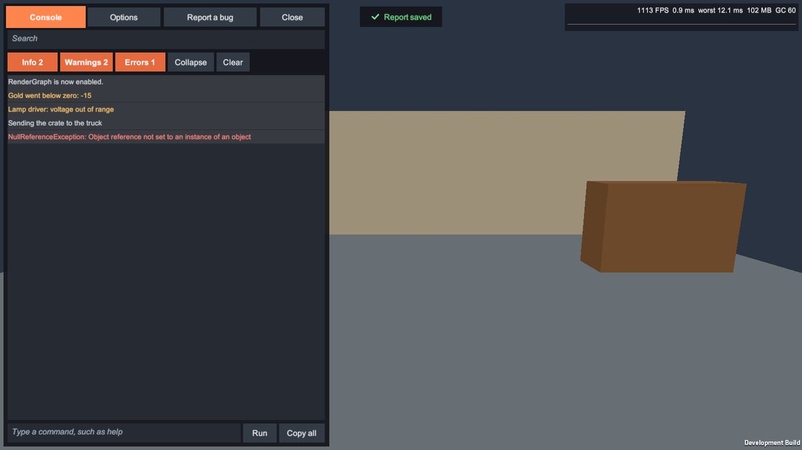
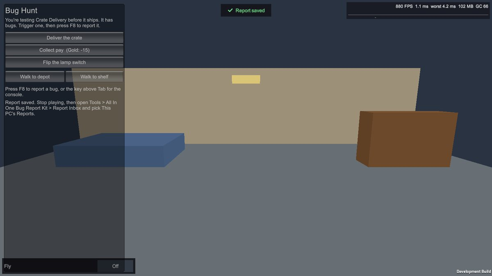

Debug overlay
Press the key above Tab (Settings > Overlay Key), or tap with three fingers, while playing.
Console #

- Search finds words in messages and stack traces.
- Info, Warnings, Errors show or hide each level; the numbers count everything that matches the search.
- Collapse groups identical lines (same message and stack) with a count.
- Clear hides what's there now; new lines still arrive.
- Tap a line for its stack trace, Copy, or Report this, which opens the form with the message filled in.
- Copy all copies every line shown.
- The command line runs commands: type
helpfor the list,timescale 0.5for slow motion, or your own (see Extending). Each command and its answer go into the log, so they reach reports too.
While the overlay is closed, a small badge counts new warnings and errors. Tap it to open the console.
Stats #
Frame rate, average and worst frame time, memory and garbage collections, with a graph of the last 120 frames: green within 60 FPS, amber within 30, red above. Settings > Stats Strip: With Overlay, Always or Off.
Options #
Switches, numbers, choices, buttons and read-only values from your Debug Options Sources and [DebugOption] fields.
Pin keeps an option on screen, still working, while the overlay is closed. Keep stats on screen does the same
for the stats.

Cost #
Closed, the overlay reads two numbers a frame and allocates nothing. Open, it refreshes four times a second.